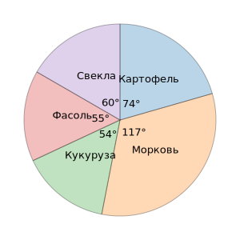

Сдай на 100.
Стаканчик для мороженого в форме конуса имеет глубину 12 см и диаметр верхней части 5 см. На него всерху положили один шарик мороженого диаметром 5 см. На какой высоте $h$ (в сантиметрах) окажется мороженое, когда растает? В ответ запишите значение выражения $h^3$. Считайте, что при таянии все мороженое стекает в конус и объем его не изменяется.
Решение.
Для решения задачи потребуются формулы для нахождения объемов конуса и шара, а также площади круга.
Объем конуса равен: $V_c = \frac{1}{3}SH$, где $S$ - площадь основания, $H$ - высота.
Объем шара можно вычислить по формуле: $V_s = \frac{4}{3}\pi r^3$, где $r$ - радиус шара.
Для нахождения площади круга воспользуемся формулой: $S_c = \pi r^2$, где $r$ - радиус круга.
С учетом последней формулы объем конуса можно переписать как: $V_c = \frac{1}{3}\pi r^2H$, где $r$ - радиус основания.
Тогда объем шарика мороженого равен: $V_s = \frac{4}{3}\pi \left(\frac{5}{2}\right)^3 = \frac{125}{6}\pi$.
Высота мороженого после стекания относится к радиусу основания заполненой части конуса, как высота исходного конуса к его радиусу основания. То есть: $\frac{h}{r} = \frac{12}{5/2} = \frac{24}{5} \Rightarrow r = \frac{5h}{24}$. Тогда объем заполненной части конуса можно вырасить через его высоту (выше приведена формула через радиус, а радиус можно выразить через высоту, следовательно и объем тоже). Подставив выражение для $r$ в формулу вычисления объема конуса и прирaвняв к объему шара, получим уравнение для нахождения искомой высоты: $$\frac{1}{3}\pi \left(\frac{5h}{24}\right)^2h = \frac{125}{6}\pi,$$
$$h^3 = \frac{125\cdot 24^2}{2\cdot 5^2} = 5\cdot 24\cdot 12 = 120\cdot 12 = 1440.$$
Вычислите $$\log_{(\sqrt{7}+1)}{(8+2\sqrt{7})} + \log_{\frac{1}{2}}^2{\sqrt[3]{4}} + 6^{\log_{36}49} + \log_5{\frac{1}{25}} - \left(\frac{2}{3}\right)^2.$$
Решение.
Для вычисления выражения упрастим каждое слагаемое отдельно:
$$\log_{(\sqrt{7}+1)}{(8+2\sqrt{7})} = \left[(\sqrt{7}+1)^2 = 8 + 2\sqrt{7})\right] = 2,$$
далее будем использовать правило:
$$\log_{a^n}{b^m} = \frac{m}{n}\log_ab,$$
$$\log_{\frac{1}{2}}^2{\sqrt[3]{4}} = \log_{2^{-1}}^2{2^\frac{2}{3}} = \left[\log_22 = 1\right] = \left(-\frac{2}{3}\right)^2 = \left(\frac{2}{3}\right)^2,$$
$$6^{\log_{36}49} = \left[\log_{36}49 = \log_{6^2}{7^2} = \frac{2}{2}\log_67 = \log_67\right] = 6^{\log_67} = 7,$$
$$\log_5{\frac{1}{25}} = log_5{{5}^{-2}} = -2,$$
собираем все воедино:
$$2 + \left(\frac{2}{3}\right)^2 + 7 + (-2) - \left(\frac{2}{3}\right)^2 = 7.$$
Укажите формула для нахождения $n$-го члена $a_n$ арифметической прогрессии, у которой $a_2 = 4$, $d = -7$.
Решение.
Чтобы указать формулу для нахождения $n$-го члена арифметической прогрессии нужно знать значение первого члена $a_1$ и разность прогрессии. Тогда $a_n = a_1$ + $(n-1)\cdot d$ (*). По условию нам дана разность прогрессии $d = -7$, а первый член можно найти из общей формулы (*): $a_2 = a_1 + (2-1)\cdot d \Rightarrow a_1 = a_2 - d$. В нашем случае $a_1 = 4 - (-7) = 11$. Подствляем в (*) и получаем ответ: $a_n = 11 + (n-1) \cdot (-7) = 18 - 7\cdot n$.
Сумма посевных площадей равна 1080 га. На рисунке изображена круговая диаграмма распределения этих площадей. Тогда площадь, отведенная под кукурузу, равна:

Решение.
Из диаграммы видим, что угол сектора, соответствующего кукурузе, равен 54°. Тогда реальная площадь $X$ отведенная под кукурузу относится к 54, так же, как общая площадь посевных площадей к сумме углов всех секторов на диаграмме. Сумма углов всех секторов равна: $$60° + 55° + 54° + 117° + 74° = 360°.$$ Получаем пропорцию: $$\frac{54}{X} = \frac{360}{1080}.$$ Сократим дробь в правой части равенства: $$\frac{360}{1080} = \frac{1}{3},$$ получим: $$\frac{54}{X} = \frac{1}{3}$$ Выразим неизвестное: $X = 3\cdot 54 = 162$. Значит площадь засеянная кукурузой равна 162 га.
Укажите неравенство, соответствующее множеству точек на рисунке.
Решение.
Мы имеем дело с интервалом координатной прямой заключенным между точками $-7$ и $9$. Точка $-7$ обозначена как выколотая $\Rightarrow$ не входит в интервал. Точка $9$ не выколотая $\Rightarrow$ входит в интервал. Значит неравенство, описывающее множество точек на рисунке имеет вид: $-7\lt n \leq 9$.